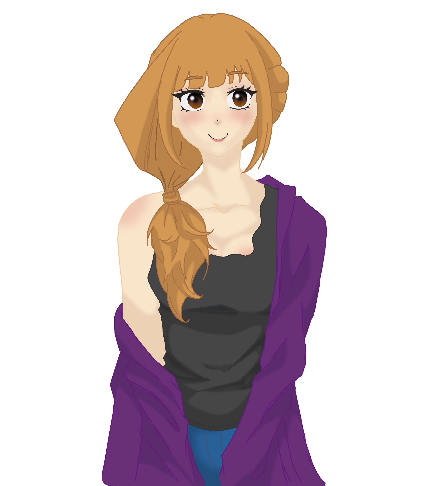

Seja muito bem-vindo ao nosso projeto.
Desenvolvemos uma solução baseada em avatares interativos capazes de auxiliar usuários durante sua experiência dentro de plataformas digitais. Nosso objetivo é criar uma comunicação mais dinâmica, acessível e funcional, oferecendo suporte em tarefas, missões e interações de acordo com o contexto de uso da plataforma.
A proposta utiliza métricas, progresso e padrões de comportamento para fornecer informações relevantes de maneira organizada e intuitiva, tornando a experiência mais personalizada e envolvente.
Atualmente, o desenvolvimento do projeto está sendo realizado com foco na proposta apresentada pela empresa SoulUP, utilizando sua rede social como base conceitual para testes de funcionalidades, estrutura de comunicação e comportamento do avatar inteligente.